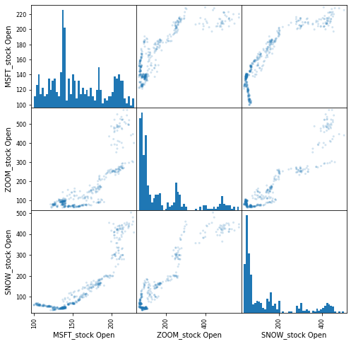
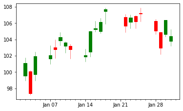
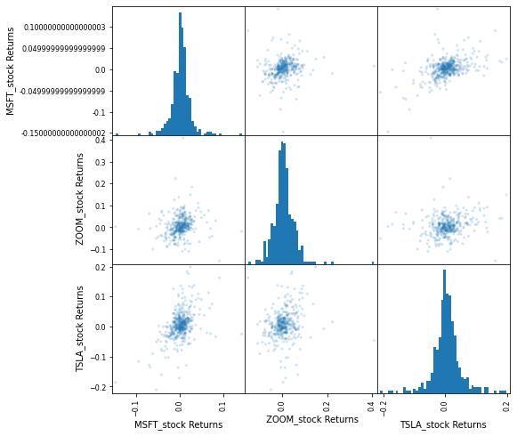
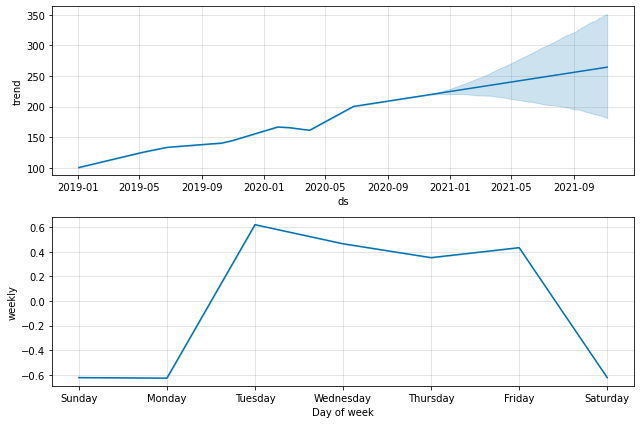
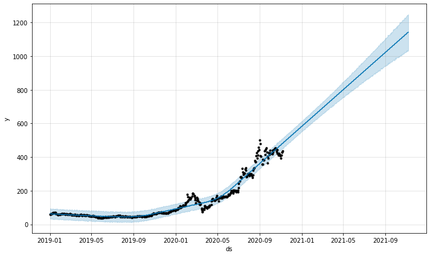
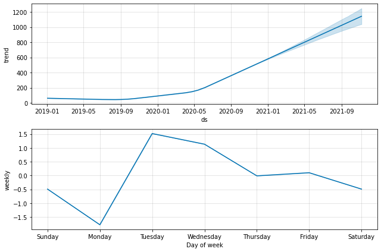
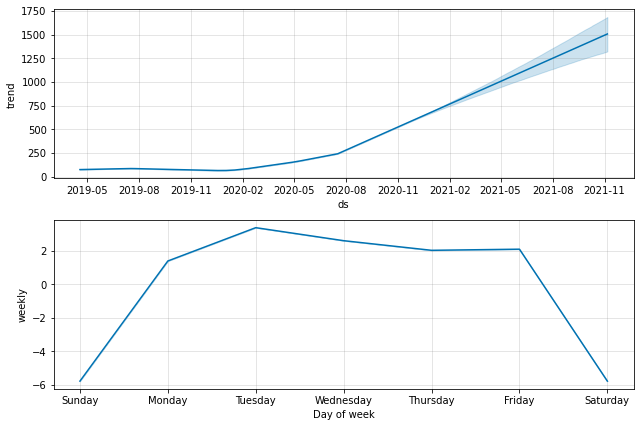

Stock Market Analysis of Microsoft, Zoom, and Snowflake¶
Daily Return and Cumulative Returns¶
This post includes code adapted from python for finance and trading algorithms udemy course and python for finance and trading algorithms udemy course notebooks.
import numpy as np
import pandas as pd
import matplotlib.pyplot as plt
%matplotlib inline
import pandas_datareader
import datetime
import pandas_datareader.data as web
start = datetime.datetime(2019, 1, 1)
end = datetime.datetime(2021, 1, 1)
#start = datetime.datetime(2012, 1, 1)
#end = datetime.datetime(2017, 1, 1)
#tesla = web.DataReader("TSLA", 'yahoo', start, end)
MSFT_stock = web.DataReader('MSFT', 'yahoo', start, end)
MSFT_stock.head()
ZOOM_stock = web.DataReader('ZM', 'yahoo', start, end)
ZOOM_stock.head()
TSLA_stock = web.DataReader('TSLA', 'yahoo', start, end)
TSLA_stock.head()
| High | Low | Open | Close | Volume | Adj Close | |
|---|---|---|---|---|---|---|
| Date | ||||||
| 2019-01-02 | 63.026001 | 59.759998 | 61.220001 | 62.023998 | 58293000.0 | 62.023998 |
| 2019-01-03 | 61.880001 | 59.476002 | 61.400002 | 60.071999 | 34826000.0 | 60.071999 |
| 2019-01-04 | 63.599998 | 60.546001 | 61.200001 | 63.537998 | 36970500.0 | 63.537998 |
| 2019-01-07 | 67.348000 | 63.549999 | 64.344002 | 66.991997 | 37756000.0 | 66.991997 |
| 2019-01-08 | 68.802002 | 65.403999 | 68.391998 | 67.070000 | 35042500.0 | 67.070000 |
MSFT_stock['Open'].plot(label='MSFT_stock',figsize=(16,8),title='Open Price')
ZOOM_stock['Open'].plot(label='ZOOM_stock')
TSLA_stock['Open'].plot(label='TSLA_stock')
plt.legend()
<matplotlib.legend.Legend at 0x7fabf2074c90>
MSFT_stock['Volume'].plot(label='MSFT_stock',figsize=(16,8),title='Volume Traded')
ZOOM_stock['Volume'].plot(label='ZOOM_stock')
TSLA_stock['Volume'].plot(label='TSLA_stock')
plt.legend()
<matplotlib.legend.Legend at 0x7fabf1feab90>
MSFT_stock['Volume'].argmax()
291
MSFT_stock['Total Traded'] = MSFT_stock['Open']*MSFT_stock['Volume']
TSLA_stock['Total Traded'] = TSLA_stock['Open']*TSLA_stock['Volume']
ZOOM_stock['Total Traded'] = ZOOM_stock['Open']*ZOOM_stock['Volume']
MSFT_stock['Total Traded'].plot(label='MSFT_stock',figsize=(16,8))
ZOOM_stock['Total Traded'].plot(label='ZOOM_stock')
TSLA_stock['Total Traded'].plot(label='TSLA_stock')
plt.legend()
plt.ylabel('Total Traded')
Text(0, 0.5, 'Total Traded')
ZOOM_stock['Total Traded'].argmax()
346
MA (Moving Averages)
ZOOM_stock['MA50'] = ZOOM_stock['Open'].rolling(50).mean()
ZOOM_stock['MA200'] = ZOOM_stock['Open'].rolling(200).mean()
ZOOM_stock[['Open','MA50','MA200']].plot(label='ZOOM_stock',figsize=(16,8))
<AxesSubplot:xlabel='Date'>
from pandas.plotting import scatter_matrix
car_comp = pd.concat([MSFT_stock['Open'],ZOOM_stock['Open'],SNOW_stock['Open']],axis=1)
car_comp.columns = ['MSFT_stock Open','ZOOM_stock Open','SNOW_stock Open']
# You can use a semi-colon to remove the axes print outs
scatter_matrix(car_comp,figsize=(8,8),alpha=0.2,hist_kwds={'bins':50});

from mpl_finance import candlestick_ohlc
from matplotlib.dates import DateFormatter, date2num, WeekdayLocator, DayLocator, MONDAY
# Rest the index to get a column of January Dates
MSFT_stock_reset = MSFT_stock.loc['2019-01':'2019-01'].reset_index()
# Create a new column of numerical "date" values for matplotlib to use
MSFT_stock_reset['date_ax'] = MSFT_stock_reset['Date'].apply(lambda date: date2num(date))
MSFT_stock_values = [tuple(vals) for vals in MSFT_stock_reset[['date_ax', 'Open', 'High', 'Low', 'Close']].values]
mondays = WeekdayLocator(MONDAY) # major ticks on the mondays
alldays = DayLocator() # minor ticks on the days
weekFormatter = DateFormatter('%b %d') # e.g., Jan 12
dayFormatter = DateFormatter('%d') # e.g., 12
fig, ax = plt.subplots()
fig.subplots_adjust(bottom=0.2)
ax.xaxis.set_major_locator(mondays)
ax.xaxis.set_minor_locator(alldays)
ax.xaxis.set_major_formatter(weekFormatter)
candlestick_ohlc(ax, MSFT_stock_values, width=0.6, colorup='g',colordown='r');

# Method 1: Using shift
MSFT_stock['returns'] = (MSFT_stock['Close'] / MSFT_stock['Close'].shift(1) ) - 1
MSFT_stock.head()
MSFT_stock['returns'] = MSFT_stock['Close'].pct_change(1)
MSFT_stock.head()
| High | Low | Open | Close | Volume | Adj Close | Total Traded | returns | |
|---|---|---|---|---|---|---|---|---|
| Date | ||||||||
| 2019-01-02 | 101.750000 | 98.940002 | 99.550003 | 101.120003 | 35329300.0 | 98.860214 | 3.517032e+09 | NaN |
| 2019-01-03 | 100.190002 | 97.199997 | 100.099998 | 97.400002 | 42579100.0 | 95.223351 | 4.262168e+09 | -0.036788 |
| 2019-01-04 | 102.510002 | 98.930000 | 99.720001 | 101.930000 | 44060600.0 | 99.652115 | 4.393723e+09 | 0.046509 |
| 2019-01-07 | 103.269997 | 100.980003 | 101.639999 | 102.059998 | 35656100.0 | 99.779205 | 3.624086e+09 | 0.001275 |
| 2019-01-08 | 103.970001 | 101.709999 | 103.040001 | 102.800003 | 31514400.0 | 100.502670 | 3.247244e+09 | 0.007251 |
TSLA_stock['returns'] = TSLA_stock['Close'].pct_change(1)
ZOOM_stock['returns'] = ZOOM_stock['Close'].pct_change(1)
TSLA_stock.head()
| High | Low | Open | Close | Volume | Adj Close | Total Traded | returns | |
|---|---|---|---|---|---|---|---|---|
| Date | ||||||||
| 2019-01-02 | 63.026001 | 59.759998 | 61.220001 | 62.023998 | 58293000.0 | 62.023998 | 3.568698e+09 | NaN |
| 2019-01-03 | 61.880001 | 59.476002 | 61.400002 | 60.071999 | 34826000.0 | 60.071999 | 2.138316e+09 | -0.031472 |
| 2019-01-04 | 63.599998 | 60.546001 | 61.200001 | 63.537998 | 36970500.0 | 63.537998 | 2.262595e+09 | 0.057697 |
| 2019-01-07 | 67.348000 | 63.549999 | 64.344002 | 66.991997 | 37756000.0 | 66.991997 | 2.429372e+09 | 0.054361 |
| 2019-01-08 | 68.802002 | 65.403999 | 68.391998 | 67.070000 | 35042500.0 | 67.070000 | 2.396627e+09 | 0.001164 |
ZOOM_stock.head()
| High | Low | Open | Close | Volume | Adj Close | Total Traded | MA50 | MA200 | returns | |
|---|---|---|---|---|---|---|---|---|---|---|
| Date | ||||||||||
| 2019-04-18 | 66.000000 | 60.320999 | 65.000000 | 62.000000 | 25764700 | 62.000000 | 1.674706e+09 | NaN | NaN | NaN |
| 2019-04-22 | 68.900002 | 59.939999 | 61.000000 | 65.699997 | 9949700 | 65.699997 | 6.069317e+08 | NaN | NaN | 0.059677 |
| 2019-04-23 | 74.168999 | 65.550003 | 66.870003 | 69.000000 | 6786500 | 69.000000 | 4.538133e+08 | NaN | NaN | 0.050228 |
| 2019-04-24 | 71.500000 | 63.160000 | 71.400002 | 63.200001 | 4973500 | 63.200001 | 3.551079e+08 | NaN | NaN | -0.084058 |
| 2019-04-25 | 66.849998 | 62.599998 | 64.739998 | 65.000000 | 3863300 | 65.000000 | 2.501100e+08 | NaN | NaN | 0.028481 |
TSLA_stock['returns'].hist(bins=50)
<AxesSubplot:>
MSFT_stock['returns'].hist(bins=50)
<AxesSubplot:>
ZOOM_stock['returns'].hist(bins=50)
<AxesSubplot:>

MSFT_stock['returns'].hist(bins=100,label='MSFT_stock',figsize=(10,8),alpha=0.5)
ZOOM_stock['returns'].hist(bins=100,label='ZOOM_stock',alpha=0.5)
TSLA_stock['returns'].hist(bins=100,label='TSLA_stock',alpha=0.5)
plt.legend()
<matplotlib.legend.Legend at 0x7fabf1902d90>

MSFT_stock['returns'].plot(kind='kde',label='MSFT_stock',figsize=(12,6))
ZOOM_stock['returns'].plot(kind='kde',label='ZOOM_stock')
TSLA_stock['returns'].plot(kind='kde',label='TSLA_stock')
plt.legend()
<matplotlib.legend.Legend at 0x7fabf11a3e50>
box_df = pd.concat([MSFT_stock['returns'],ZOOM_stock['returns'],TSLA_stock['returns']],axis=1)
box_df.columns = ['MSFT_stock Returns',' ZOOM_stock Returns','TSLA_stock Returns']
box_df.plot(kind='box',figsize=(8,11),colormap='jet')
<AxesSubplot:>
scatter_matrix(box_df,figsize=(8,8),alpha=0.2,hist_kwds={'bins':50});

scatter_matrix(box_df,figsize=(8,8),alpha=0.2,hist_kwds={'bins':50});

box_df.plot(kind='scatter',x=' ZOOM_stock Returns',y='MSFT_stock Returns',alpha=0.4,figsize=(10,8))
<AxesSubplot:xlabel=' ZOOM_stock Returns', ylabel='MSFT_stock Returns'>
Daily Return and Cumulative Return¶
MSFT_stock['Cumulative Return'] = (1 + MSFT_stock['returns']).cumprod()
MSFT_stock.head()
| High | Low | Open | Close | Volume | Adj Close | Total Traded | returns | Cumulative Return | |
|---|---|---|---|---|---|---|---|---|---|
| Date | |||||||||
| 2019-01-02 | 101.750000 | 98.940002 | 99.550003 | 101.120003 | 35329300.0 | 98.860214 | 3.517032e+09 | NaN | NaN |
| 2019-01-03 | 100.190002 | 97.199997 | 100.099998 | 97.400002 | 42579100.0 | 95.223351 | 4.262168e+09 | -0.036788 | 0.963212 |
| 2019-01-04 | 102.510002 | 98.930000 | 99.720001 | 101.930000 | 44060600.0 | 99.652115 | 4.393723e+09 | 0.046509 | 1.008010 |
| 2019-01-07 | 103.269997 | 100.980003 | 101.639999 | 102.059998 | 35656100.0 | 99.779205 | 3.624086e+09 | 0.001275 | 1.009296 |
| 2019-01-08 | 103.970001 | 101.709999 | 103.040001 | 102.800003 | 31514400.0 | 100.502670 | 3.247244e+09 | 0.007251 | 1.016614 |
TSLA_stock['Cumulative Return'] = (1 + TSLA_stock['returns']).cumprod()
ZOOM_stock['Cumulative Return'] = (1 + ZOOM_stock['returns']).cumprod()
MSFT_stock['Cumulative Return'].plot(label='MSFT_stock',figsize=(16,8),title='Cumulative Return')
TSLA_stock['Cumulative Return'].plot(label='TSLA_stock')
ZOOM_stock['Cumulative Return'].plot(label='ZOOM_stock')
plt.legend()
<matplotlib.legend.Legend at 0x7fabf0c54650>
from fbprophet import Prophet
MSFT_stock['ds'] = MSFT_stock.index
MSFT_stock['y'] = MSFT_stock.Open
m = Prophet()
m.fit(MSFT_stock)
INFO:fbprophet:Disabling yearly seasonality. Run prophet with yearly_seasonality=True to override this.
INFO:fbprophet:Disabling daily seasonality. Run prophet with daily_seasonality=True to override this.
<fbprophet.forecaster.Prophet at 0x7fabf0b5e7d0>
future = m.make_future_dataframe(periods=365)
future.tail()
| ds | |
|---|---|
| 828 | 2021-11-02 |
| 829 | 2021-11-03 |
| 830 | 2021-11-04 |
| 831 | 2021-11-05 |
| 832 | 2021-11-06 |
forecast = m.predict(future)
forecast[['ds', 'yhat', 'yhat_lower', 'yhat_upper']].tail()
| ds | yhat | yhat_lower | yhat_upper | |
|---|---|---|---|---|
| 828 | 2021-11-02 | 264.480553 | 180.297752 | 351.490936 |
| 829 | 2021-11-03 | 264.454392 | 181.887667 | 348.682850 |
| 830 | 2021-11-04 | 264.470521 | 183.308874 | 351.080864 |
| 831 | 2021-11-05 | 264.680107 | 182.084709 | 351.905134 |
| 832 | 2021-11-06 | 263.754254 | 180.125064 | 351.617704 |
fig1 = m.plot(forecast)

fig2 = m.plot_components(forecast)

MSFT_stock['Open'].plot()
<AxesSubplot:xlabel='Date'>
import statsmodels.api as sm
MSFT_stock_cycle, MSFT_stock_trend = sm.tsa.filters.hpfilter(MSFT_stock['Open'])
MSFT_stock_cycle
Date
2019-01-02 -1.311918
2019-01-03 -1.097494
2019-01-04 -1.812243
2019-01-07 -0.224671
2019-01-08 0.847869
...
2020-11-02 -8.431408
2020-11-03 -8.845880
2020-11-04 1.239842
2020-11-05 9.198111
2020-11-06 9.350548
Name: Open_cycle, Length: 468, dtype: float64
MSFT_stock['trend'] = MSFT_stock_trend
MSFT_stock['trend']
Date
2019-01-02 100.861921
2019-01-03 101.197493
2019-01-04 101.532244
2019-01-07 101.864670
2019-01-08 102.192132
...
2020-11-02 212.721402
2020-11-03 212.735880
2020-11-04 212.780163
2020-11-05 212.841883
2020-11-06 212.909447
Name: trend, Length: 468, dtype: float64
MSFT_stock[["trend", "Open"]].plot(figsize=(16,6))
<AxesSubplot:xlabel='Date'>
TSLA_stock['ds'] = TSLA_stock.index
TSLA_stock['y'] = TSLA_stock.Open
m = Prophet()
m.fit(TSLA_stock)
INFO:fbprophet:Disabling yearly seasonality. Run prophet with yearly_seasonality=True to override this.
INFO:fbprophet:Disabling daily seasonality. Run prophet with daily_seasonality=True to override this.
<fbprophet.forecaster.Prophet at 0x7fabeaebca10>
# Python
TSLA_stock['cap'] = 8.5
m = Prophet(growth='logistic')
m.fit(TSLA_stock)
INFO:fbprophet:Disabling yearly seasonality. Run prophet with yearly_seasonality=True to override this.
INFO:fbprophet:Disabling daily seasonality. Run prophet with daily_seasonality=True to override this.
<fbprophet.forecaster.Prophet at 0x7fabf081d190>
# future = m.make_future_dataframe(periods=1826)
# future['cap'] = 600
# fcst = m.predict(future)
# fig = m.plot(fcst)
future = m.make_future_dataframe(periods=365)
future.tail()
| ds | |
|---|---|
| 828 | 2021-11-02 |
| 829 | 2021-11-03 |
| 830 | 2021-11-04 |
| 831 | 2021-11-05 |
| 832 | 2021-11-06 |
forecast = m.predict(future)
forecast[['ds', 'yhat', 'yhat_lower', 'yhat_upper']].tail()
| ds | yhat | yhat_lower | yhat_upper | |
|---|---|---|---|---|
| 828 | 2021-11-02 | 1136.958087 | 1029.660624 | 1241.408457 |
| 829 | 2021-11-03 | 1138.386277 | 1029.960322 | 1245.559028 |
| 830 | 2021-11-04 | 1139.054611 | 1027.658532 | 1245.938576 |
| 831 | 2021-11-05 | 1140.980461 | 1031.883548 | 1250.009090 |
| 832 | 2021-11-06 | 1142.201501 | 1037.157758 | 1245.925892 |
fig1 = m.plot(forecast)

fig2 = m.plot_components(forecast)

ZOOM_stock['ds'] = ZOOM_stock.index
ZOOM_stock['y'] = ZOOM_stock.Open
m = Prophet()
m.fit(ZOOM_stock)
INFO:fbprophet:Disabling yearly seasonality. Run prophet with yearly_seasonality=True to override this.
INFO:fbprophet:Disabling daily seasonality. Run prophet with daily_seasonality=True to override this.
<fbprophet.forecaster.Prophet at 0x7fabf0b64790>
future = m.make_future_dataframe(periods=365)
future.tail()
| ds | |
|---|---|
| 754 | 2021-11-02 |
| 755 | 2021-11-03 |
| 756 | 2021-11-04 |
| 757 | 2021-11-05 |
| 758 | 2021-11-06 |
forecast = m.predict(future)
forecast[['ds', 'yhat', 'yhat_lower', 'yhat_upper']].tail()
| ds | yhat | yhat_lower | yhat_upper | |
|---|---|---|---|---|
| 754 | 2021-11-02 | 1498.560150 | 1318.618163 | 1677.021462 |
| 755 | 2021-11-03 | 1500.430463 | 1324.946607 | 1679.133120 |
| 756 | 2021-11-04 | 1502.503460 | 1323.082402 | 1683.102389 |
| 757 | 2021-11-05 | 1505.218307 | 1323.789633 | 1683.789366 |
| 758 | 2021-11-06 | 1499.986193 | 1323.049103 | 1680.953619 |
fig1 = m.plot(forecast)

fig2 = m.plot_components(forecast)
